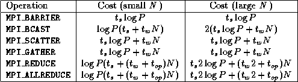
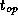

![[DBPP]](pictures//asm_color_tiny.gif)


![[Search]](pictures//search_motif.gif)
The performance analysis techniques developed in Chapter 3 can be applied directly to MPI programs. We discuss some relevant costs here.
An MPI_SEND/ MPI_RECV pair communicates a single message. The cost of this communication can be modeled with Equation 3.1. The cost of the blocking MPI_PROBE operation will normally be similar to that of an ordinary receive. The cost of the nonblocking MPI_IPROBE operation can vary significantly according to implementation: in some implementations it may be negligible, while in others it can be higher than an ordinary receive.
The performance of global operations is less straightforward to
analyze, as their execution can involve considerable internal
communication. Implementations of these functions can normally be
expected to use efficient communication algorithms, such as the
hypercube algorithms described in Chapter 11. In the
absence of bandwidth limitations, these allow a barrier to complete in
 steps on
P
processors, a broadcast of N
words to proceed in
time if N
is small and in time if N
is large, and so on. The
costs associated with these algorithms are summarized in
Table 8.1. Remember that on many architectures,
bandwidth limitations can increase actual costs, especially for larger
messages (Section3.7).
steps on
P
processors, a broadcast of N
words to proceed in
time if N
is small and in time if N
is large, and so on. The
costs associated with these algorithms are summarized in
Table 8.1. Remember that on many architectures,
bandwidth limitations can increase actual costs, especially for larger
messages (Section3.7).

Table 8.1: Communication costs associated with various MPI global
operations when implemented using hypercube communication algorithms
on the idealized multicomputer architecture. The term 
represents the cost of a single reduction
operation.
The MPI_COMM_DUP, MPI_COMM_SPLIT, and MPI_COMM_FREE operations should not normally involve communication. The cost of the MPI_INTERCOMM_CREATE operation is implementation dependent, but will normally involve at least one communication operation. The cost of the MPI_INIT and MPI_FINALIZE operations is implementation dependent and can be high. However, these functions are called once only in a program execution. Other functions can normally be expected to execute without communication and with little local computation.
© Copyright 1995 by Ian Foster